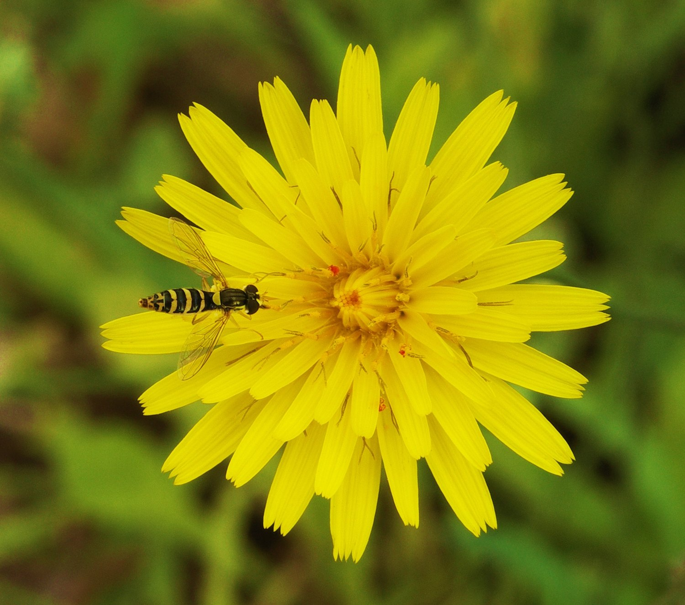

UNDERGRADUATE & POSTGRADUATE COMMUNITY
Entomology,
in focus.
A home for curious minds in insect science. Keep up with the discoveries, ideas and opportunities shaping our field.

A small world.
Extraordinary possibilities.
THE ENTOMOLOGY BRIEFING
Stay curious. Stay connected.
News from the UK and around the world, alongside research worth a closer look.
No highlights in this view
Try a wider subject or clear your filters.
Publication dates are shown as supplied by the source. “From the feeds” items and subject tags are selected automatically; follow the original article for the evidence and full context. Global coverage includes studies from individual countries outside the UK.
PUT YOUR CURIOSITY TO WORK
Learn by exploring.
Interactive tools for building your entomological skills, wherever you are studying.
Virtual entobox
Build and organise a digital insect collection. Practise observation, identification and specimen recording.
Open your collectionFunctional-response lab
Explore predator–prey interactions, handling time and experimental design through an interactive practical.
Try the practicalPollinator game
Explore pollinator ecology through play and use your observations to start a discussion.
Explore the gameBEYOND THE CLASSROOM
Take the next step.
Turn something you have read into a question, a record or a conversation.
A five-minute journal club
- What question does the study ask?
- Which evidence supports its main claim?
- What do the design and analysis allow you to conclude?
- Where might its findings not apply?
- What would you test next?
FOLLOW THE EVIDENCE
Good starting points.
Go straight to the organisations and journals behind the headlines.
How these highlights are selected and updated
Selected highlights include a short summary and a prompt for your study or research. Alongside them, automatic feeds collect article titles and publication details from entomological organisations and journals. Automated entries are discovery links, not assessments of research quality. A research label describes the source; review the article type and peer-review status at the publisher.
Subject tags may be inferred from title keywords or a journal’s scope and can be imperfect. UK focus means the item explicitly concerns the UK; a UK publisher alone does not make a story UK-focused. This is a starting point, not a comprehensive literature search.
Source checks run daily. If a source is unavailable, previously collected items are retained and its status is shown below. Older selected highlights remain useful background reading.
Saved articles and your colour preference stay in this browser. There is no sign-in or cross-device sync and no hub analytics. External sites have their own privacy policies.
Photograph: Alvesgaspar, Hoverfly on flower edit, Wikimedia Commons. CC BY 2.5. Displayed with responsive cropping.